Last updated: 2015-06-29
Code version: e927fac891c5ab5af9b62b9eecc0232855931c96
library("dplyr")
library("ggplot2")
theme_set(theme_bw(base_size = 16))
library("edgeR")
library("gplots")Input annotation.
anno <- read.table("../data/annotation.txt", header = TRUE,
stringsAsFactors = FALSE)
head(anno) individual batch well sample_id
1 19098 1 A01 NA19098.1.A01
2 19098 1 A02 NA19098.1.A02
3 19098 1 A03 NA19098.1.A03
4 19098 1 A04 NA19098.1.A04
5 19098 1 A05 NA19098.1.A05
6 19098 1 A06 NA19098.1.A06Input read counts.
reads <- read.table("../data/reads.txt", header = TRUE,
stringsAsFactors = FALSE)Input molecule counts.
molecules <- read.table("../data/molecules.txt", header = TRUE,
stringsAsFactors = FALSE)Input list of quality single cells.
quality_single_cells <- scan("../data/quality-single-cells.txt",
what = "character")Keep only the single cells that passed the QC filters and the bulk samples.
molecules <- molecules[, grepl("bulk", colnames(molecules)) |
colnames(molecules) %in% quality_single_cells]
anno <- anno[anno$well == "bulk" | anno$sample_id %in% quality_single_cells, ]
stopifnot(ncol(molecules) == nrow(anno),
colnames(molecules) == anno$sample_id)
reads <- reads[, grepl("bulk", colnames(reads)) |
colnames(reads) %in% quality_single_cells]
stopifnot(ncol(reads) == nrow(anno),
colnames(reads) == anno$sample_id)Remove genes with zero read counts in the single cells or bulk samples.
expressed <- rowSums(molecules[, anno$well == "bulk"]) > 0 &
rowSums(molecules[, anno$well != "bulk"]) > 0
molecules <- molecules[expressed, ]
dim(molecules)[1] 17208 641expressed <- rowSums(reads[, anno$well == "bulk"]) > 0 &
rowSums(reads[, anno$well != "bulk"]) > 0
reads <- reads[expressed, ]
dim(reads)[1] 17218 641Split the bulk and single samples.
molecules_bulk <- molecules[, anno$well == "bulk"]
molecules_single <- molecules[, anno$well != "bulk"]
reads_bulk <- reads[, anno$well == "bulk"]
reads_single <- reads[, anno$well != "bulk"]Remove genes with max molecule numer larger than 1024
molecules_single <- molecules_single[apply(molecules_single,1,max) < 1024,]See if batches from the same individual cluster together
# create table using the molecule counts
group_list <- c("19","19098","19101","19239","19098.1","19098.2","19098.3","19101.1","19101.2","19101.3","19239.1","19239.2","19239.3")
### create a function to generate tables of mean,
create_info_table <- function(statistics="mean"){
# first correct
molecules.crt <- -1024*log(1-molecules_single/1024)
# loop all possible combinations
big_table <- do.call(cbind,lapply(group_list,function(x){
# subset data
data_ref <- molecules.crt[grep(x,names(molecules.crt))]
if(statistics=="mean"){
ans <- apply(data_ref,1,function(xx) mean(xx,na.rm=TRUE))
}
if(statistics=="var"){
ans <- apply(data_ref,1,function(xx) var(xx,na.rm=TRUE))
}
if(statistics=="CV"){
ans <- apply(data_ref,1,function(xx) sd(xx,na.rm=TRUE)) / apply(data_ref,1,function(xx) mean(xx,na.rm=TRUE))
}
ans
})
)
big_table <- data.frame(big_table)
names(big_table) <- paste(statistics,group_list,sep="_")
big_table$gene_name <- rownames(molecules_single)
big_table
}
# create big table for mean, var and cv
table_mean <- create_info_table(statistics="mean")
table_var <- create_info_table(statistics="var")
table_cv <- create_info_table(statistics="CV")
# replace 0 as NA
table_mean[table_mean==0] <- NA
table_var[table_mean==0] <- NA
table_cv[table_mean==0] <- NA
# calculate the correlation
cor(table_mean[,2:13],use="pairwise.complete.obs") mean_19098 mean_19101 mean_19239 mean_19098.1 mean_19098.2
mean_19098 1.0000000 0.9852974 0.9789826 0.9890853 0.9659667
mean_19101 0.9852974 1.0000000 0.9879295 0.9856922 0.9254189
mean_19239 0.9789826 0.9879295 1.0000000 0.9809677 0.9166417
mean_19098.1 0.9890853 0.9856922 0.9809677 1.0000000 0.9205102
mean_19098.2 0.9659667 0.9254189 0.9166417 0.9205102 1.0000000
mean_19098.3 0.9897683 0.9898391 0.9844379 0.9886098 0.9265197
mean_19101.1 0.9813595 0.9958857 0.9822822 0.9863789 0.9160428
mean_19101.2 0.9750097 0.9907745 0.9791731 0.9665583 0.9267378
mean_19101.3 0.9824474 0.9963364 0.9858818 0.9852461 0.9191901
mean_19239.1 0.9751169 0.9836778 0.9961752 0.9762399 0.9141762
mean_19239.2 0.9819749 0.9906238 0.9966978 0.9837043 0.9190592
mean_19239.3 0.9695992 0.9791607 0.9958848 0.9726513 0.9065916
mean_19098.3 mean_19101.1 mean_19101.2 mean_19101.3
mean_19098 0.9897683 0.9813595 0.9750097 0.9824474
mean_19101 0.9898391 0.9958857 0.9907745 0.9963364
mean_19239 0.9844379 0.9822822 0.9791731 0.9858818
mean_19098.1 0.9886098 0.9863789 0.9665583 0.9852461
mean_19098.2 0.9265197 0.9160428 0.9267378 0.9191901
mean_19098.3 1.0000000 0.9858418 0.9789881 0.9876076
mean_19101.1 0.9858418 1.0000000 0.9771253 0.9903586
mean_19101.2 0.9789881 0.9771253 1.0000000 0.9820900
mean_19101.3 0.9876076 0.9903586 0.9820900 1.0000000
mean_19239.1 0.9802797 0.9777765 0.9777544 0.9792898
mean_19239.2 0.9882042 0.9868162 0.9795495 0.9883365
mean_19239.3 0.9747475 0.9722657 0.9698328 0.9794403
mean_19239.1 mean_19239.2 mean_19239.3
mean_19098 0.9751169 0.9819749 0.9695992
mean_19101 0.9836778 0.9906238 0.9791607
mean_19239 0.9961752 0.9966978 0.9958848
mean_19098.1 0.9762399 0.9837043 0.9726513
mean_19098.2 0.9141762 0.9190592 0.9065916
mean_19098.3 0.9802797 0.9882042 0.9747475
mean_19101.1 0.9777765 0.9868162 0.9722657
mean_19101.2 0.9777544 0.9795495 0.9698328
mean_19101.3 0.9792898 0.9883365 0.9794403
mean_19239.1 1.0000000 0.9913432 0.9865966
mean_19239.2 0.9913432 1.0000000 0.9884642
mean_19239.3 0.9865966 0.9884642 1.0000000cor(table_var[,2:13],use="pairwise.complete.obs") var_19098 var_19101 var_19239 var_19098.1 var_19098.2
var_19098 1.0000000 0.4457268 0.4937791 0.4976387 0.9618056
var_19101 0.4457268 1.0000000 0.8782272 0.8620967 0.5626504
var_19239 0.4937791 0.8782272 1.0000000 0.8879291 0.6283549
var_19098.1 0.4976387 0.8620967 0.8879291 1.0000000 0.5491121
var_19098.2 0.9618056 0.5626504 0.6283549 0.5491121 1.0000000
var_19098.3 0.5033991 0.8042806 0.9520294 0.9051561 0.6058795
var_19101.1 0.4593402 0.8919549 0.8764965 0.8894759 0.5661045
var_19101.2 0.4646436 0.8613854 0.9552923 0.8151788 0.6148337
var_19101.3 0.3819232 0.9552264 0.7674670 0.7448572 0.4888928
var_19239.1 0.4792729 0.7715627 0.9604927 0.8367994 0.6036163
var_19239.2 0.4940503 0.9313876 0.9769478 0.9248669 0.6164329
var_19239.3 0.4684518 0.8392077 0.9805642 0.8127816 0.6212588
var_19098.3 var_19101.1 var_19101.2 var_19101.3 var_19239.1
var_19098 0.5033991 0.4593402 0.4646436 0.3819232 0.4792729
var_19101 0.8042806 0.8919549 0.8613854 0.9552264 0.7715627
var_19239 0.9520294 0.8764965 0.9552923 0.7674670 0.9604927
var_19098.1 0.9051561 0.8894759 0.8151788 0.7448572 0.8367994
var_19098.2 0.6058795 0.5661045 0.6148337 0.4888928 0.6036163
var_19098.3 1.0000000 0.7998802 0.9139139 0.7084104 0.9612885
var_19101.1 0.7998802 1.0000000 0.8005423 0.7231277 0.7723457
var_19101.2 0.9139139 0.8005423 1.0000000 0.7814277 0.9411226
var_19101.3 0.7084104 0.7231277 0.7814277 1.0000000 0.6693945
var_19239.1 0.9612885 0.7723457 0.9411226 0.6693945 1.0000000
var_19239.2 0.9263464 0.9209996 0.9271934 0.8234919 0.9068348
var_19239.3 0.9208955 0.8273502 0.9459670 0.7373678 0.9351080
var_19239.2 var_19239.3
var_19098 0.4940503 0.4684518
var_19101 0.9313876 0.8392077
var_19239 0.9769478 0.9805642
var_19098.1 0.9248669 0.8127816
var_19098.2 0.6164329 0.6212588
var_19098.3 0.9263464 0.9208955
var_19101.1 0.9209996 0.8273502
var_19101.2 0.9271934 0.9459670
var_19101.3 0.8234919 0.7373678
var_19239.1 0.9068348 0.9351080
var_19239.2 1.0000000 0.9414995
var_19239.3 0.9414995 1.0000000cor(table_cv[,2:13],use="pairwise.complete.obs") CV_19098 CV_19101 CV_19239 CV_19098.1 CV_19098.2 CV_19098.3
CV_19098 1.0000000 0.8525950 0.8203035 0.9196700 0.9016564 0.8797393
CV_19101 0.8525950 1.0000000 0.8380438 0.8306933 0.8270444 0.8008779
CV_19239 0.8203035 0.8380438 1.0000000 0.8016100 0.8027402 0.7844651
CV_19098.1 0.9196700 0.8306933 0.8016100 1.0000000 0.8247774 0.8050655
CV_19098.2 0.9016564 0.8270444 0.8027402 0.8247774 1.0000000 0.8071659
CV_19098.3 0.8797393 0.8008779 0.7844651 0.8050655 0.8071659 1.0000000
CV_19101.1 0.8149290 0.9196720 0.8004435 0.8230621 0.8245842 0.7883248
CV_19101.2 0.8148629 0.9139575 0.8105231 0.8100857 0.8171736 0.8066706
CV_19101.3 0.8194759 0.8972533 0.8210178 0.8327272 0.8342135 0.8183561
CV_19239.1 0.7723207 0.7940978 0.8878040 0.7877285 0.7909112 0.7842425
CV_19239.2 0.7932015 0.8078961 0.9014403 0.7997803 0.8038477 0.7877058
CV_19239.3 0.7850551 0.8094105 0.9155776 0.7864117 0.7918676 0.7829476
CV_19101.1 CV_19101.2 CV_19101.3 CV_19239.1 CV_19239.2
CV_19098 0.8149290 0.8148629 0.8194759 0.7723207 0.7932015
CV_19101 0.9196720 0.9139575 0.8972533 0.7940978 0.8078961
CV_19239 0.8004435 0.8105231 0.8210178 0.8878040 0.9014403
CV_19098.1 0.8230621 0.8100857 0.8327272 0.7877285 0.7997803
CV_19098.2 0.8245842 0.8171736 0.8342135 0.7909112 0.8038477
CV_19098.3 0.7883248 0.8066706 0.8183561 0.7842425 0.7877058
CV_19101.1 1.0000000 0.8328967 0.8503940 0.7923881 0.8108956
CV_19101.2 0.8328967 1.0000000 0.8499119 0.8018922 0.8119385
CV_19101.3 0.8503940 0.8499119 1.0000000 0.8103150 0.8269014
CV_19239.1 0.7923881 0.8018922 0.8103150 1.0000000 0.8155535
CV_19239.2 0.8108956 0.8119385 0.8269014 0.8155535 1.0000000
CV_19239.3 0.7989245 0.8110615 0.8252111 0.8107193 0.8278178
CV_19239.3
CV_19098 0.7850551
CV_19101 0.8094105
CV_19239 0.9155776
CV_19098.1 0.7864117
CV_19098.2 0.7918676
CV_19098.3 0.7829476
CV_19101.1 0.7989245
CV_19101.2 0.8110615
CV_19101.3 0.8252111
CV_19239.1 0.8107193
CV_19239.2 0.8278178
CV_19239.3 1.0000000heatmap.2(cor(table_mean[,2:13],use="pairwise.complete.obs"), trace="none",cexRow=1,cexCol=1,margins=c(8,8))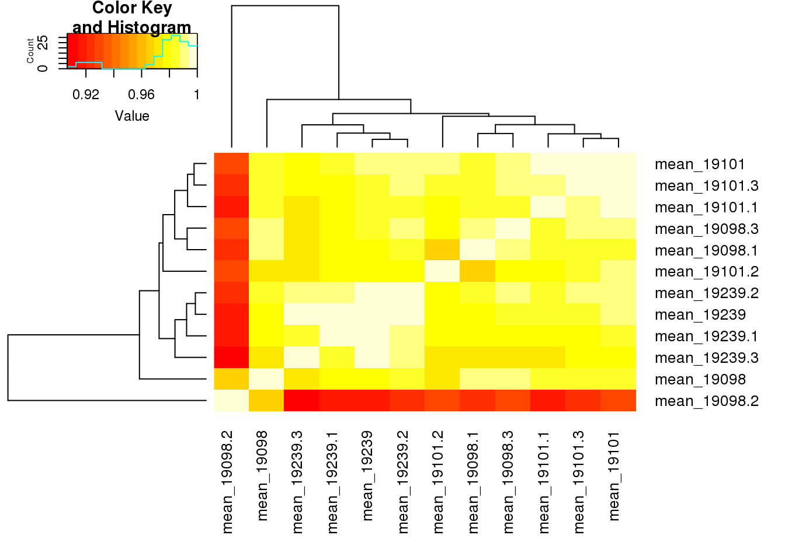
heatmap.2(cor(table_var[,2:13],use="pairwise.complete.obs"), trace="none",cexRow=1,cexCol=1,margins=c(8,8))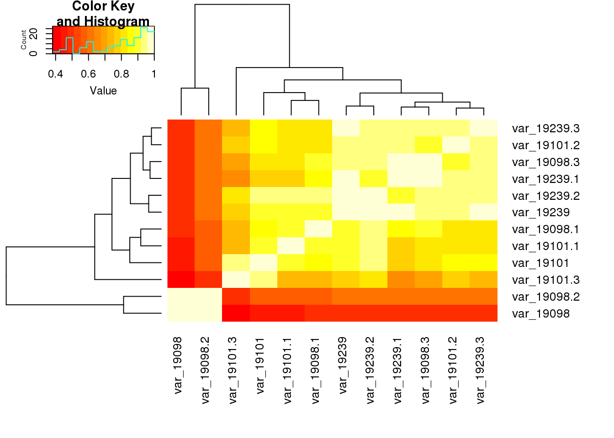
heatmap.2(cor(table_cv[,2:13],use="pairwise.complete.obs"), trace="none",cexRow=1,cexCol=1,margins=c(8,8))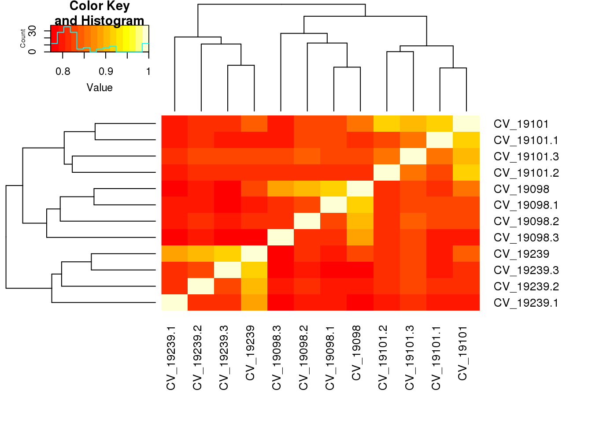
Look at the correlation of CV from batches
# create a table for boxplot of CV correlation
corr_CV <- cor(table_cv[,2:13],use="pairwise.complete.obs")
corr_boxplot <- data.frame(
correlation=c(corr_CV[4,5:6],corr_CV[5,6],corr_CV[7,8:9],corr_CV[8,9],corr_CV[7,8:9],corr_CV[11,12],corr_CV[4:6,7:12],corr_CV[7:9,10:12]), cor_source=c(rep("within",9),rep("between",27)), individual=c(rep("19098",3),rep("19101",3),rep("19239",3),rep("19098.19101",9),rep("19098.19239",9),rep("19101.19239",9)))
# t test
t_test <- t.test(corr_boxplot[1:6,1],corr_boxplot[7:33,1],alternative = "greater")
t_test
Welch Two Sample t-test
data: corr_boxplot[1:6, 1] and corr_boxplot[7:33, 1]
t = 2.2134, df = 7.0767, p-value = 0.03104
alternative hypothesis: true difference in means is greater than 0
95 percent confidence interval:
0.002854199 Inf
sample estimates:
mean of x mean of y
0.8283686 0.8087437 ggplot(corr_boxplot, aes(cor_source,correlation)) + geom_boxplot() + geom_jitter(aes(colour = individual, size = 2, width = 0.5)) 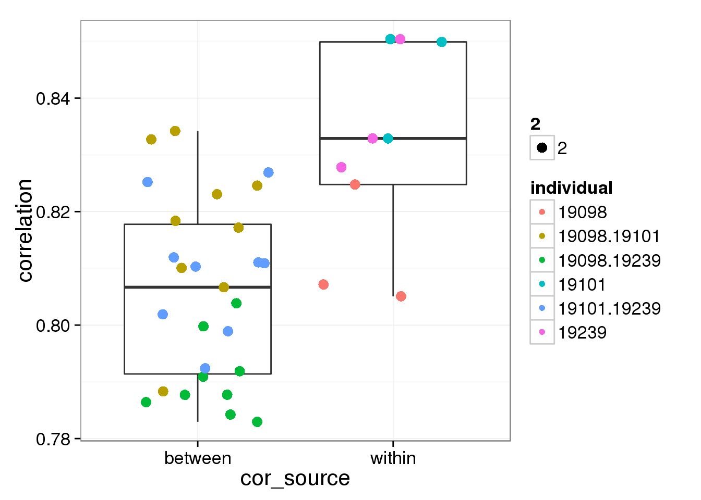
# create a table for boxplot of CV correlation without 19098.2
corr_boxplot_no <- data.frame(
correlation=c(corr_CV[4,6],corr_CV[7,8:9],corr_CV[8,9],corr_CV[7,8:9],corr_CV[11,12],corr_CV[4,7:12],corr_CV[6,7:12],corr_CV[7:9,10:12]), cor_source=c(rep("within",7),rep("between",21)), individual=c(rep("19098",1),rep("19101",3),rep("19239",3),rep("19098.19101",3),rep("19098.19239",3),rep("19098.19101",3),rep("19098.19239",3), rep("19101.19239",9)))
# t test
t_test <- t.test(corr_boxplot_no[1:6,1],corr_boxplot_no[7:33,1],alternative = "greater")
t_test
Welch Two Sample t-test
data: corr_boxplot_no[1:6, 1] and corr_boxplot_no[7:33, 1]
t = 3.9055, df = 7.2966, p-value = 0.002699
alternative hypothesis: true difference in means is greater than 0
95 percent confidence interval:
0.0161709 Inf
sample estimates:
mean of x mean of y
0.8369265 0.8056995 ggplot(corr_boxplot_no, aes(cor_source,correlation)) + geom_boxplot() + geom_jitter(aes(colour = individual, size = 2, width = 0.5))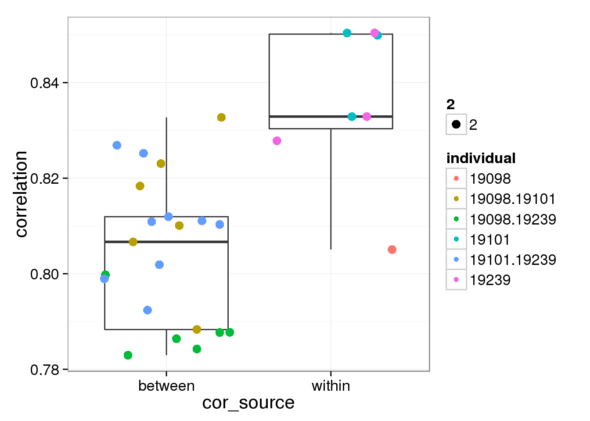
Calculate the variance betwwen individuls from the bulk samples
# normalization
reads_bulk_cpm <- cpm(reads_bulk)
# create a new dataset
reads_var <- data.frame(reads_bulk_cpm)
sum(reads_var!=reads_bulk_cpm)[1] 0# add mean of each individauls
reads_var$mean19098 <- apply(reads_var[,grep("NA19098",names(reads_var))], 1, mean)
reads_var$mean19101 <- apply(reads_var[,grep("NA19101",names(reads_var))], 1, mean)
reads_var$mean19239 <- apply(reads_var[,grep("NA19239",names(reads_var))], 1, mean)
# add variance of bulk means
reads_var$bulk_variance <- apply(reads_var[,c("mean19098","mean19101","mean19239")],1,var)Calculate the variance between individuals using the means from single cells
# normalization
reads_single_cpm <- data.frame(cpm(reads_single))
# remove the ERCC of 19098.2
## identify 19098.2
sample_name <- names(reads_single_cpm)
target.column <- sample_name[grep("19098.2",sample_name)]
## find out ERCC rows
g <- rownames(reads_single_cpm)
target.row <- g[grep("ERCC",g)]
## replace the molecules numbers with NA
reads_single_cpm[target.row,target.column] <- NA
# means of single cells within individuals
reads_var$mean.single19098 <- apply(reads_single_cpm[,grep("NA19098",names(reads_single_cpm))], 1, mean, na.rm = TRUE)
reads_var$mean.single19101 <- apply(reads_single_cpm[,grep("NA19101",names(reads_single_cpm))], 1, mean, na.rm = TRUE)
reads_var$mean.single19239 <- apply(reads_single_cpm[,grep("NA19239",names(reads_single_cpm))], 1, mean, na.rm = TRUE)
## variance of means from single cells
reads_var$mean_single_variance <- apply(reads_var[,c("mean.single19098","mean.single19101","mean.single19239")],1,var)
# sellect ERCC
reads_var$ERCC <- grepl("ERCC",rownames(reads_var))
# plot with color-blind-friendly palettes
cbPalette <- c("#999999", "#0000FF", "#990033", "#F0E442", "#0072B2", "#D55E00", "#CC79A7", "#009E73")
ggplot(reads_var, aes(x = bulk_variance, y = mean_single_variance, col = ERCC)) + geom_point(size = 2, alpha = 0.5) + scale_colour_manual(values=cbPalette) + scale_x_log10() + scale_y_log10() + stat_function(fun= function(x) {x}, col= "#56B4E9")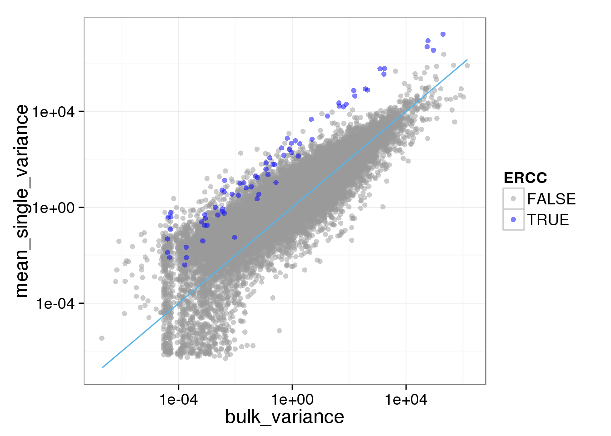
Calculate the variance between and within individuals using the single cell data
## variance within individual
variance.single19098 <- apply(reads_single_cpm[,grep("NA19098",names(reads_single_cpm))], 1, var, na.rm = TRUE)
variance.single19101 <- apply(reads_single_cpm[,grep("NA19101",names(reads_single_cpm))], 1, var, na.rm = TRUE)
variance.single19239 <- apply(reads_single_cpm[,grep("NA19239",names(reads_single_cpm))], 1, var, na.rm = TRUE)
# number of cell
number.of.cell.all <- sum(grepl("19",sample_name))
number.of.cell.19098 <- sum(grepl("19098",sample_name))
number.of.cell.19101 <- sum(grepl("19101",sample_name))
number.of.cell.19239 <- sum(grepl("19239",sample_name))
# total within individual variance
reads_var$var_within_individual<-
(variance.single19098 *(number.of.cell.19098) +
variance.single19101 *(number.of.cell.19101) +
variance.single19239 *(number.of.cell.19239) ) /
(number.of.cell.all)
ggplot(reads_var, aes(x = bulk_variance, y = var_within_individual, col = ERCC)) + geom_point(size = 2, alpha = 0.5) + scale_colour_manual(values=cbPalette) + scale_x_log10() + scale_y_log10() + stat_function(fun= function(x) {x}, col= "#56B4E9")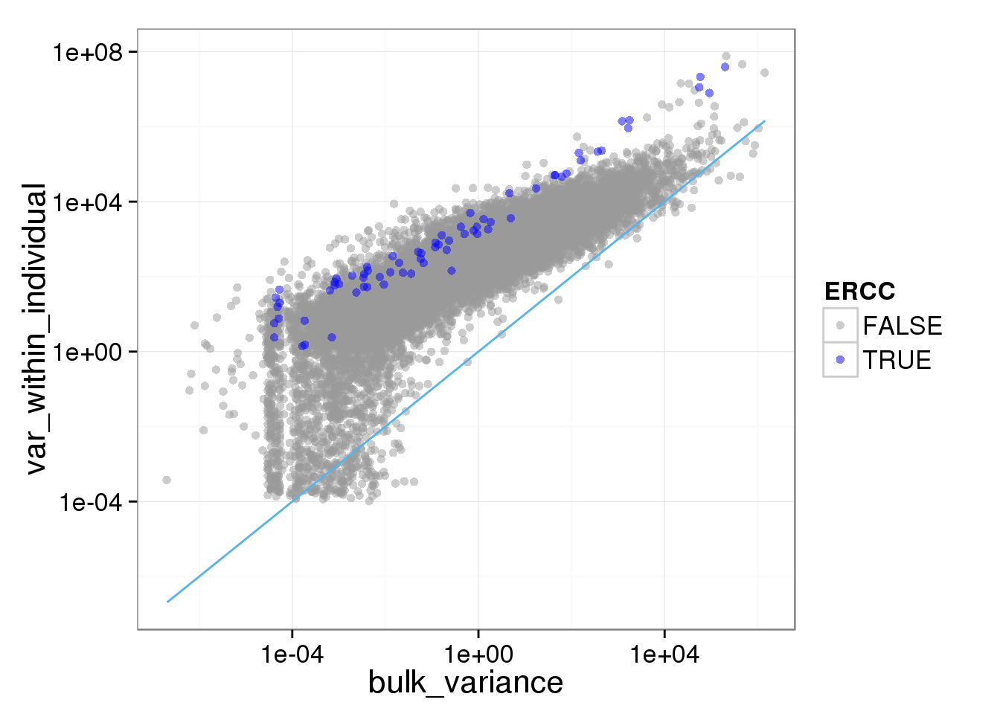
## variance between all single cells
var_all_single <- apply(reads_single_cpm, 1, var, na.rm = TRUE)
reads_var$var_all_single <- var_all_single
## variance between individauls
reads_var$var_between_individual<-(
var_all_single *(number.of.cell.all-1)-
variance.single19098 *(number.of.cell.19098-1) -
variance.single19101 *(number.of.cell.19101-1) -
variance.single19239 *(number.of.cell.19239-1) ) /
(number.of.cell.all-1)
## the variaance contributed by between individual
reads_var$ratio_var_between_individual <- reads_var[,"var_between_individual"]/var_all_single
ggplot(reads_var, aes(x = var_all_single, y = ratio_var_between_individual, col = ERCC)) + geom_point(size = 2, alpha = 0.5) + scale_colour_manual(values=cbPalette) + scale_x_log10()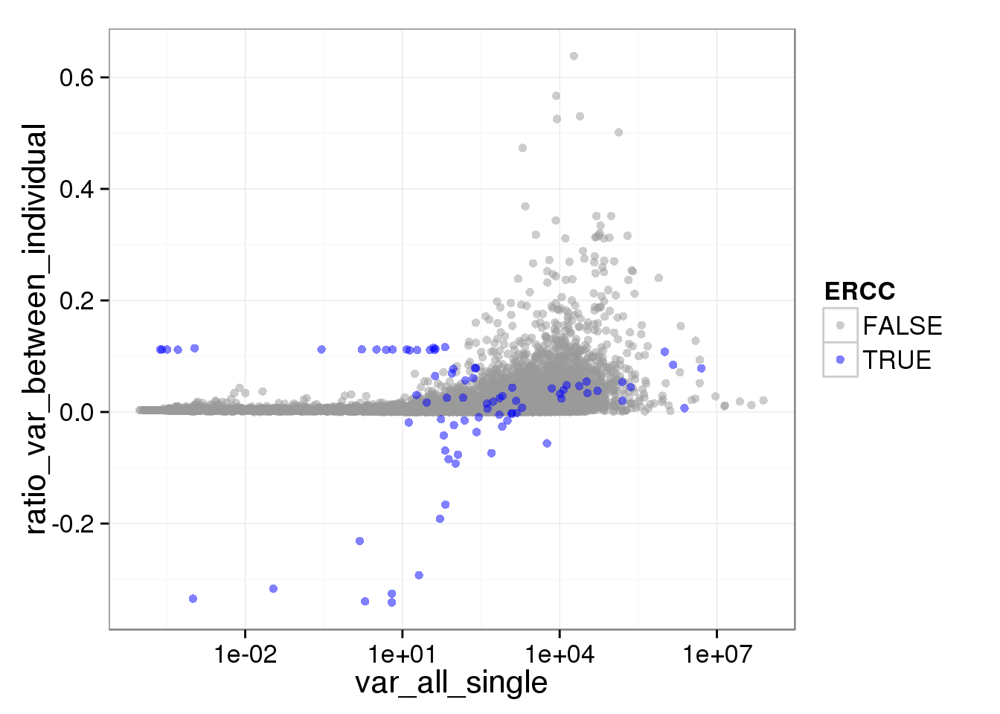
ggplot(reads_var, aes(x = var_all_single, y = var_between_individual, col = ERCC)) + geom_point(size = 2, alpha = 0.5) + scale_colour_manual(values=cbPalette) + scale_x_log10() + scale_y_log10() + stat_function(fun= function(x) {x}, col= "#56B4E9")Warning in scale$trans$trans(x): NaNs producedWarning in scale$trans$trans(x): NaNs producedWarning in loop_apply(n, do.ply): Removed 24 rows containing missing values
(geom_point).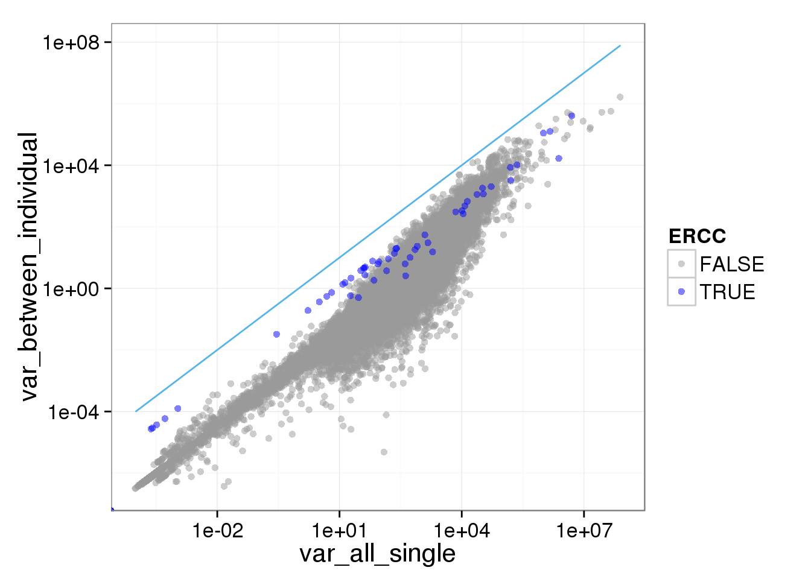
ggplot(reads_var, aes(x = bulk_variance, y = var_between_individual, col = ERCC)) + geom_point(size = 2, alpha = 0.5) + scale_colour_manual(values=cbPalette) + scale_x_log10() + scale_y_log10() + stat_function(fun= function(x) {x}, col= "#56B4E9")Warning in scale$trans$trans(x): NaNs producedWarning in scale$trans$trans(x): NaNs producedWarning in loop_apply(n, do.ply): Removed 24 rows containing missing values
(geom_point).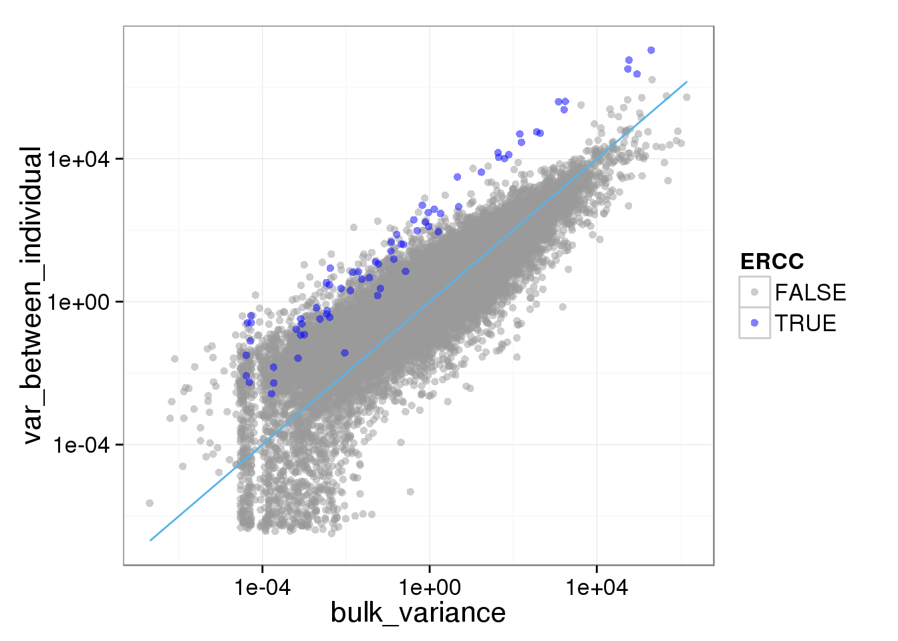
Pull the p-value
### create a function for f.test by anova
### compare the to fits:
### 1. lm from all single cells
### 2. lm from each individaul
f.test <- function(data.in){
tt <- names(data.in)
individual.id <- rep("19098",length(tt))
individual.id[grep("19101",tt)] <- "19101"
individual.id[grep("19239",tt)] <- "19239"
dd <- data.frame(reads=unlist(data.in),individual.id=individual.id)
fit1 <- lm(reads~1,data=dd)
fit2 <- lm(reads~1 + individual.id,data=dd)
anova(fit1,fit2)[2,"Pr(>F)"]
}
# creat the f test table
f.test.table <- do.call(rbind,lapply(rownames(reads_single_cpm),function(x){
data.frame(gene_name=x,p_of_f=f.test(reads_single_cpm[x,]))
}))
# sellect ERCC
f.test.table$ERCC <- grepl("ERCC",f.test.table[,1])
# sort
f.test.table.sort <- f.test.table[order(f.test.table[,2]),]
head(f.test.table.sort) gene_name p_of_f ERCC
14654 ENSG00000106153 1.095160e-139 FALSE
6757 ENSG00000256618 5.551611e-115 FALSE
5028 ENSG00000183648 6.035838e-104 FALSE
8833 ENSG00000022556 1.794451e-102 FALSE
14243 ENSG00000112306 8.897942e-96 FALSE
16181 ENSG00000176386 2.418442e-88 FALSEplot(f.test.table.sort[,2], log = "y",col=as.numeric(f.test.table.sort$ERCC+1))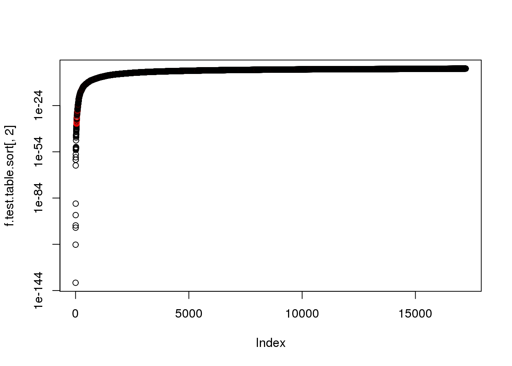
plot(f.test.table.sort[1:5000,2], log = "y",col=as.numeric(f.test.table.sort$ERCC[1:5000]+1))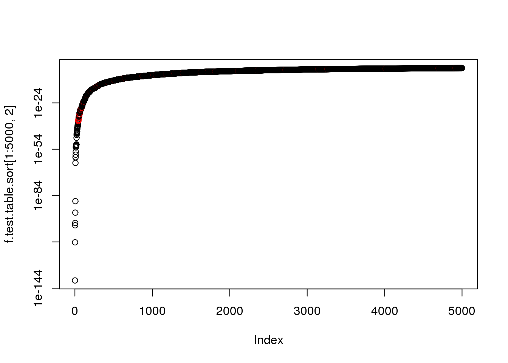
plot(f.test.table.sort[1:5000,2],col=as.numeric(f.test.table.sort$ERCC[1:5000]+1),pch=20,cex=.3)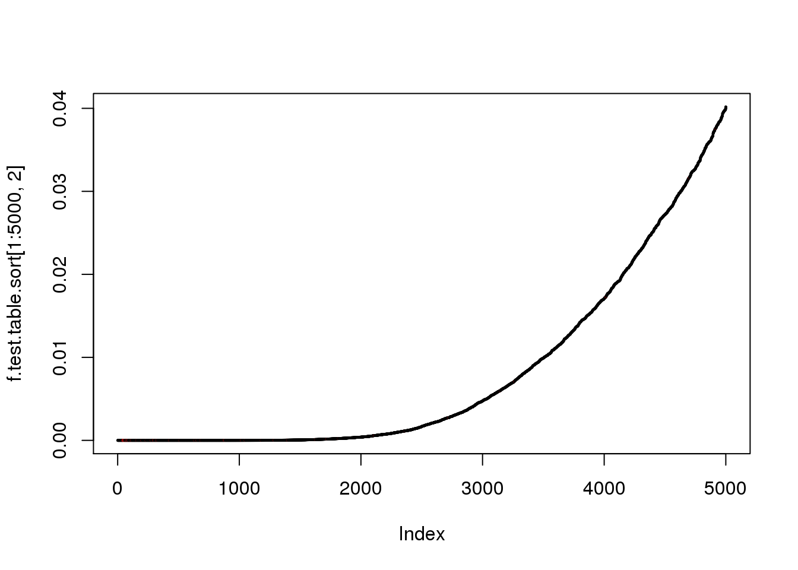
# plot the variance and show p 0f f
reads_var$p_of_f <- f.test.table$p_of_f
ggplot(reads_var, aes(x = bulk_variance, y = mean_single_variance, shape = as.factor(ERCC), col = p_of_f)) + geom_point(size = 2, alpha = 0.25) + scale_x_log10() + scale_y_log10() + scale_colour_gradient2(midpoint= 0.5, space="Lab") + stat_function(fun= function(x) {x}, col= "#56B4E9")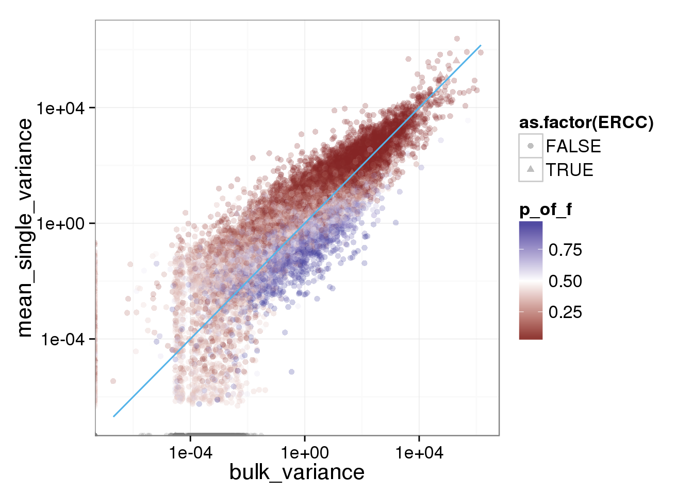
ggplot(reads_var, aes(x = bulk_variance, y = var_within_individual, shape = as.factor(ERCC), col = p_of_f)) + geom_point(size = 2, alpha = 0.5) + scale_x_log10() + scale_y_log10() + scale_colour_gradient2(midpoint= 0.5, space="Lab") + stat_function(fun= function(x) {x}, col= "#56B4E9")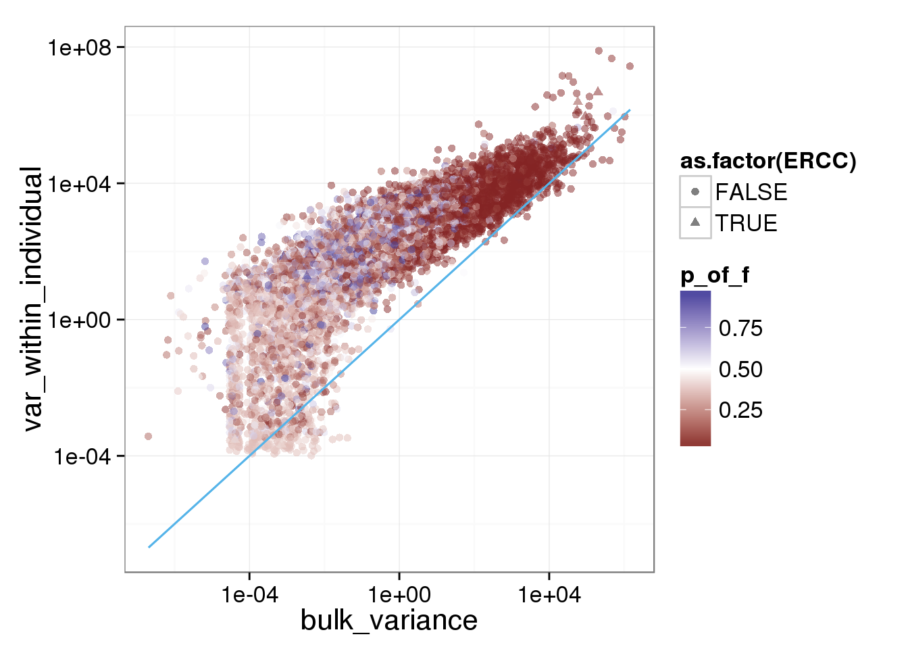
ggplot(reads_var, aes(x = bulk_variance, y = var_between_individual, shape = as.factor(ERCC), col = p_of_f)) + geom_point(size = 2, alpha = 0.5) + scale_x_log10() + scale_y_log10() + scale_colour_gradient2(midpoint= 0.5, space="Lab") + stat_function(fun= function(x) {x}, col= "#56B4E9")Warning in scale$trans$trans(x): NaNs producedWarning in scale$trans$trans(x): NaNs producedWarning in loop_apply(n, do.ply): Removed 24 rows containing missing values
(geom_point).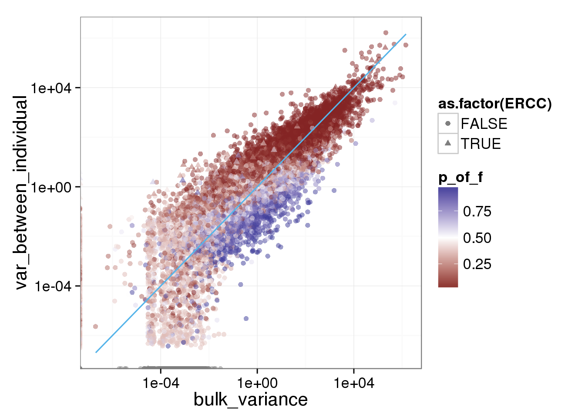
ggplot(reads_var, aes(x = var_all_single, y = var_between_individual, shape = as.factor(ERCC), col = p_of_f)) + geom_point(size = 2, alpha = 0.5) + scale_x_log10() + scale_y_log10() + scale_colour_gradient2(midpoint= 0.5, space="Lab") + stat_function(fun= function(x) {x}, col= "#56B4E9")Warning in scale$trans$trans(x): NaNs producedWarning in scale$trans$trans(x): NaNs producedWarning in loop_apply(n, do.ply): Removed 24 rows containing missing values
(geom_point).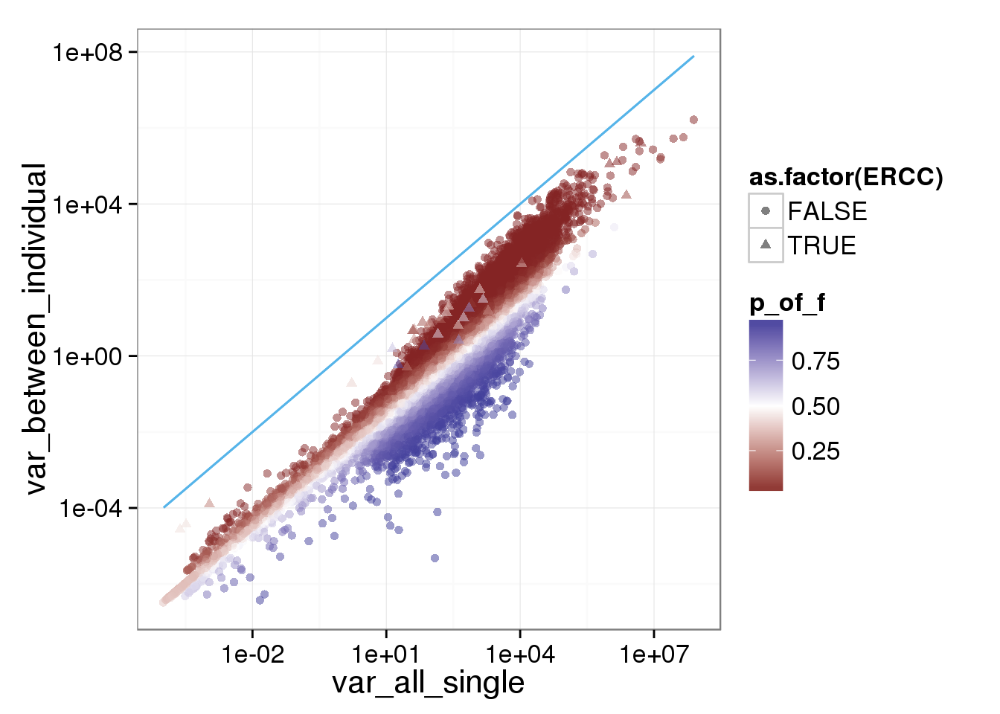
Pull the F value
# looking at the F value
f.test.F <- function(data.in){
tt <- names(data.in)
individual.id <- rep("19098",length(tt))
individual.id[grep("19101",tt)] <- "19101"
individual.id[grep("19239",tt)] <- "19239"
dd <- data.frame(reads=unlist(data.in),individual.id=individual.id)
fit1 <- lm(reads~1,data=dd)
fit2 <- lm(reads~1 + individual.id,data=dd)
anova(fit1,fit2)[2,"F"]
}
# creat the f test table of F value
f.test.F.table <- do.call(rbind,lapply(rownames(reads_single_cpm),function(x){
data.frame(gene_name=x,F_value=f.test.F(reads_single_cpm[x,]))
}))
# sellect ERCC
f.test.F.table$ERCC <- grepl("ERCC",f.test.F.table[,1])
# plot the variance and show F value
reads_var$F_value <- f.test.F.table$F_value
# calculate F value from p
# when p=0.01
qf(1-0.05,2,629)[1] 3.010045# create color index
reads_var$F_color <- "1 < F < 3"
reads_var$F_color[reads_var$F_value >=3] <- "F >= 3"
reads_var$F_color[reads_var$F_value <=1] <- "F <= 1"
# use the F value from p to scale the gradient
ggplot(reads_var, aes(x = bulk_variance, y = mean_single_variance, shape = as.factor(ERCC), col = F_color)) + scale_colour_manual(values=cbPalette) + geom_point(size = 2, alpha = 0.5) + scale_x_log10() + scale_y_log10() + stat_function(fun= function(x) {x}, col= "#56B4E9")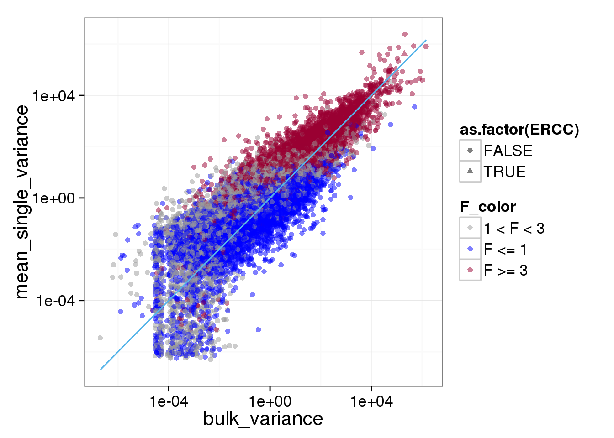
ggplot(reads_var, aes(x = bulk_variance, y = var_within_individual, shape = as.factor(ERCC), col = F_color)) + scale_colour_manual(values=cbPalette) + geom_point(size = 2, alpha = 0.5) + scale_x_log10() + scale_y_log10() + stat_function(fun= function(x) {x}, col= "#56B4E9")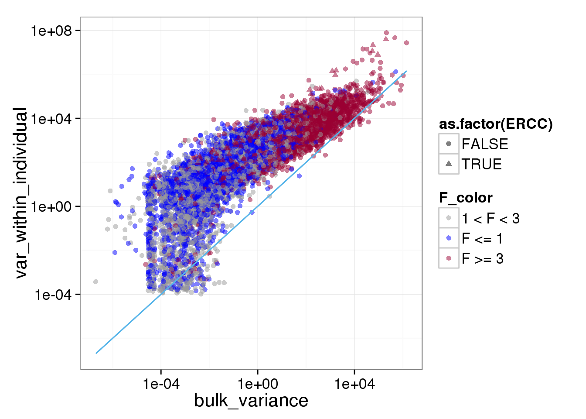
ggplot(reads_var, aes(x = bulk_variance, y = var_between_individual, shape = as.factor(ERCC), col = F_color)) + scale_colour_manual(values=cbPalette) + geom_point(size = 2, alpha = 0.5) + scale_x_log10() + scale_y_log10() + stat_function(fun= function(x) {x}, col= "#56B4E9")Warning in scale$trans$trans(x): NaNs producedWarning in scale$trans$trans(x): NaNs producedWarning in loop_apply(n, do.ply): Removed 24 rows containing missing values
(geom_point).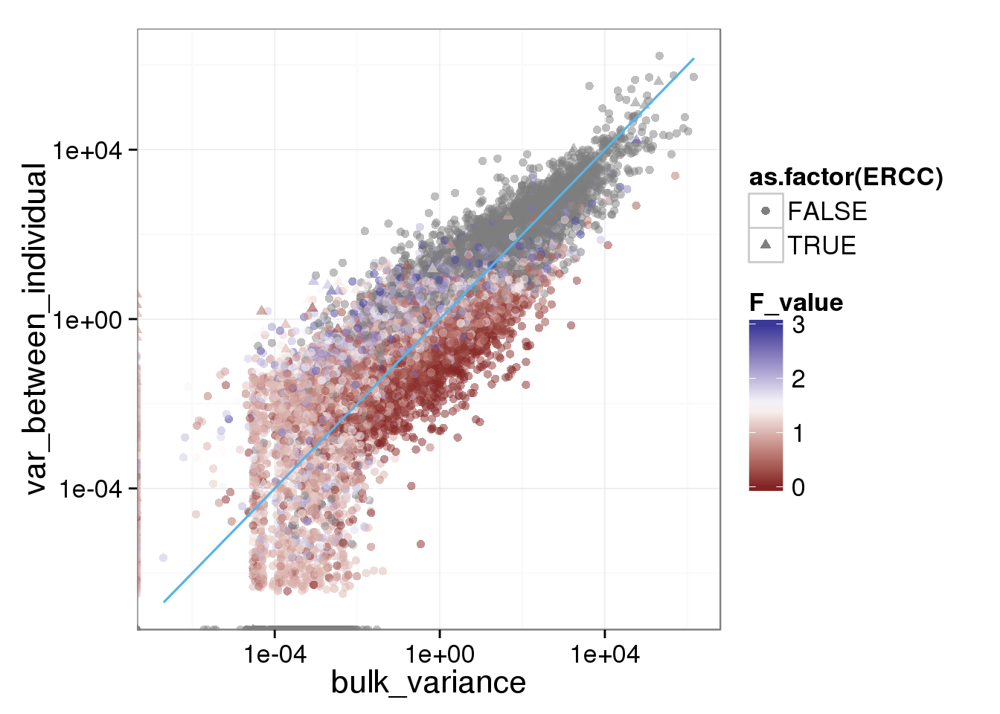
ggplot(reads_var, aes(x = var_all_single, y = var_within_individual, shape = as.factor(ERCC), col = F_color)) + scale_colour_manual(values=cbPalette) + geom_point(size = 2, alpha = 0.5) + scale_x_log10() + scale_y_log10() + stat_function(fun= function(x) {x}, col= "#56B4E9")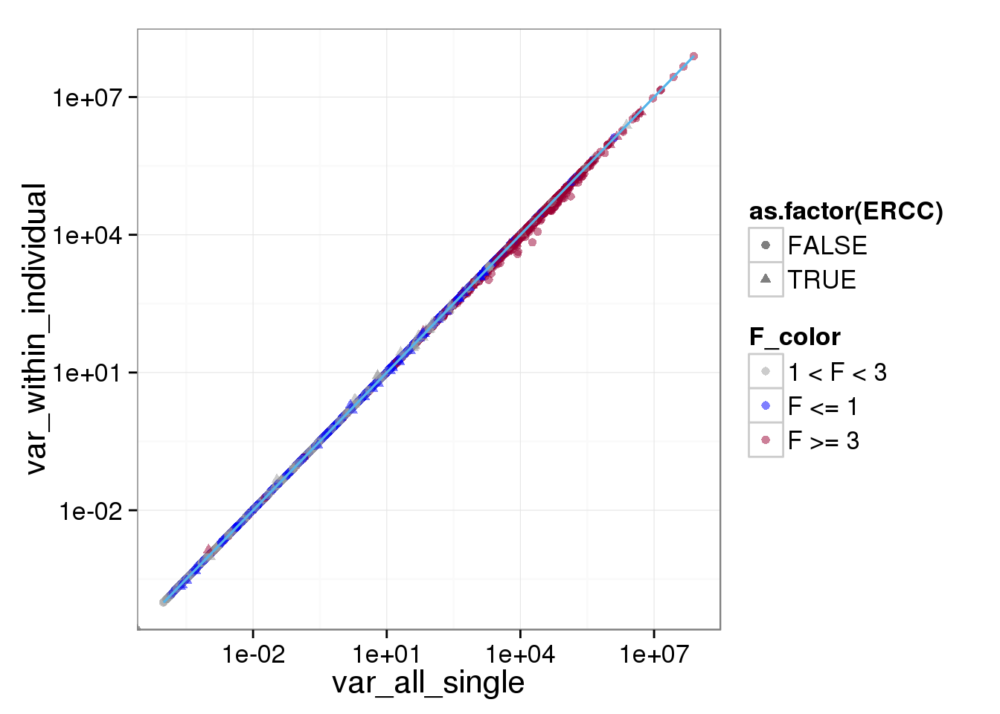
ggplot(reads_var, aes(x = var_all_single, y = var_between_individual, shape = as.factor(ERCC), col = F_color)) + scale_colour_manual(values=cbPalette) + geom_point(size = 2, alpha = 0.2) + scale_x_log10() + scale_y_log10() + stat_function(fun= function(x) {x}, col= "#56B4E9")Warning in scale$trans$trans(x): NaNs producedWarning in scale$trans$trans(x): NaNs producedWarning in loop_apply(n, do.ply): Removed 24 rows containing missing values
(geom_point).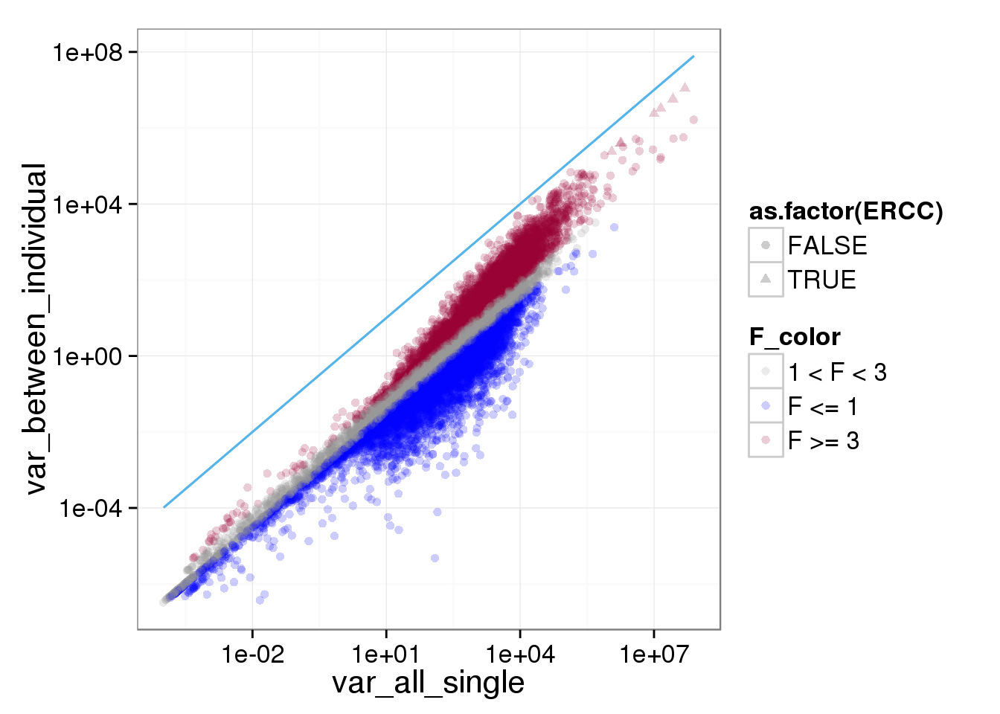
sessionInfo()R version 3.2.0 (2015-04-16)
Platform: x86_64-unknown-linux-gnu (64-bit)
locale:
[1] LC_CTYPE=en_US.UTF-8 LC_NUMERIC=C
[3] LC_TIME=en_US.UTF-8 LC_COLLATE=en_US.UTF-8
[5] LC_MONETARY=en_US.UTF-8 LC_MESSAGES=en_US.UTF-8
[7] LC_PAPER=en_US.UTF-8 LC_NAME=C
[9] LC_ADDRESS=C LC_TELEPHONE=C
[11] LC_MEASUREMENT=en_US.UTF-8 LC_IDENTIFICATION=C
attached base packages:
[1] stats graphics grDevices utils datasets methods base
other attached packages:
[1] gplots_2.17.0 edgeR_3.10.2 limma_3.24.9 ggplot2_1.0.1 dplyr_0.4.1
[6] knitr_1.10.5
loaded via a namespace (and not attached):
[1] Rcpp_0.11.6 magrittr_1.5 MASS_7.3-40
[4] munsell_0.4.2 colorspace_1.2-6 stringr_1.0.0
[7] plyr_1.8.2 caTools_1.17.1 tools_3.2.0
[10] parallel_3.2.0 grid_3.2.0 gtable_0.1.2
[13] KernSmooth_2.23-14 DBI_0.3.1 gtools_3.5.0
[16] htmltools_0.2.6 yaml_2.1.13 assertthat_0.1
[19] digest_0.6.8 reshape2_1.4.1 formatR_1.2
[22] bitops_1.0-6 evaluate_0.7 rmarkdown_0.6.1
[25] labeling_0.3 gdata_2.16.1 stringi_0.4-1
[28] scales_0.2.4 proto_0.3-10